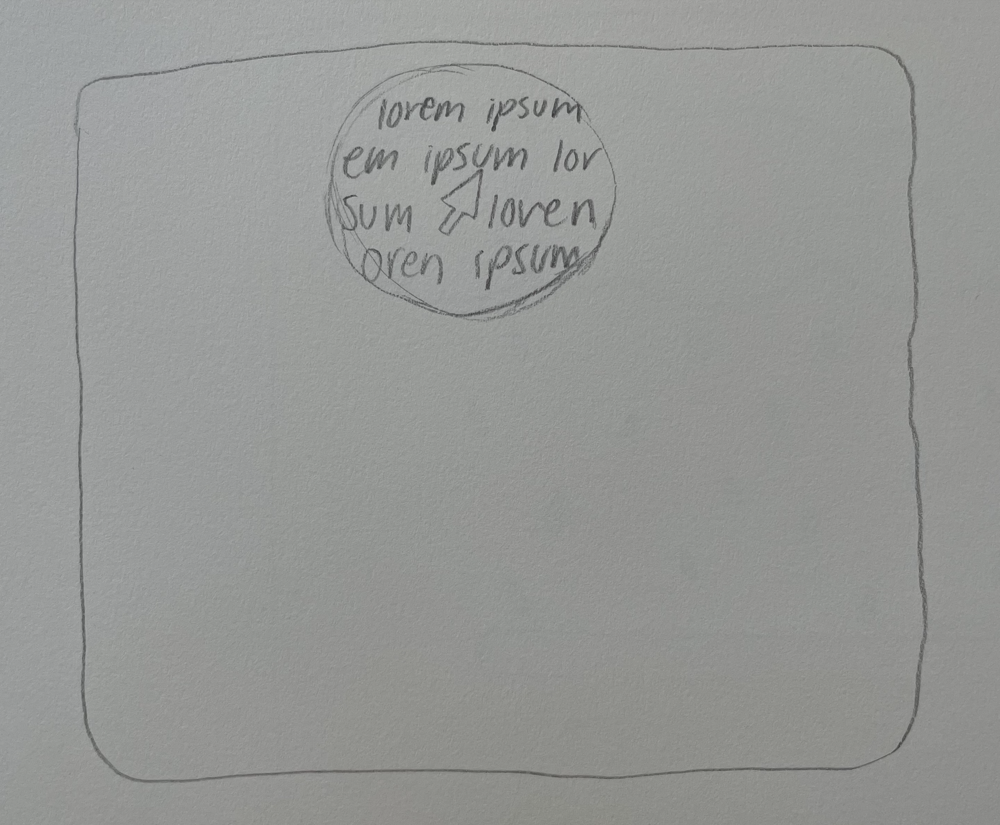

Concept: Inspired by "My website is a shifting house next to a river of knowledge" by Laurel Schwulst. Based of the idea that a website is a puddle, I created a concept for a site that changes function based off the weather. If it is raining in your area, the website "rains" and reveals a submission bar that a viewer can enter text to submit to the site. When it is sunny, the mouse acts as a light beam that reveals the text on the page in the radius of the mouse. In any other weather, the website remains empty.
